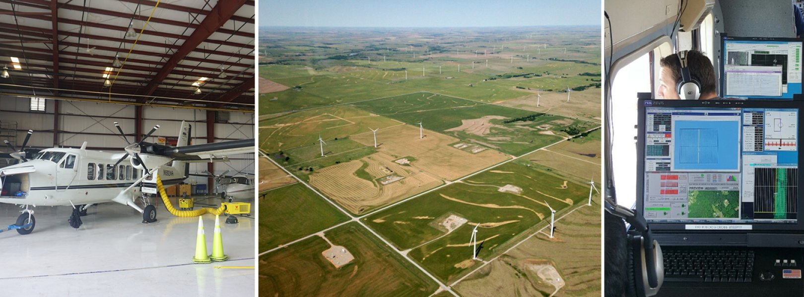
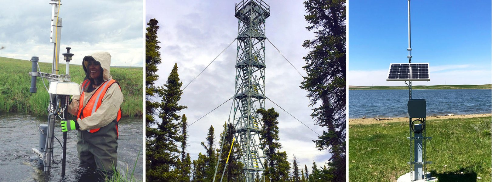

NEON Airborne and Field Datasets
What is NEON?
NEON is a continental-scale observation facility designed to collect long-term open-access ecological data to better understand the complexities of Earth’s ecosystems and how they are changing. NEON uses cutting-edge sensor networks, instrumentation, observational sampling, natural history archive facilities and remote sensing methods and technologies to collect data on plants, animals, soil, nutrients, freshwater and the atmosphere.
NEON operates 81 field sites strategically located across 20 ecoclimatic Domains across the United States, including 47 terrestrial sites and 34 freshwater aquatic sites. When logistically possible, aquatic and terrestrial field sites are colocated (i.e. in close proximity) to support understanding of linkages across terrestrial and aquatic ecosystems and their interactions with the atmosphere. For example, Domain 08, the Ozarks Complex, has three co-located sets of terrestrial and aquatic field sites. These sites are situated along the same watershed system, creating a unique opportunity to study hydrology, nutrient transport, and biogeochemical cycling through the watershed.

NEON Airborne Observation Platform (AOP)

Airborne remote sensing surveys are conducted over NEON field sites during peak greenness and provide quantitative information on land cover and changes to ecological structure and chemistry, including the presence and effects of invasive species. The surveys are supported by the NEON Airborne Observation Platform (AOP), a suite of earth observation instruments installed into a Twin Otter aircraft designed to collect high-resolution remote sensing data at low altitude. AOP was designed to collect regional-scale landscape information at the NEON field sites. The AOP maps areas where NEON’s observational and instrumented sampling is occurring and allows relationships to be drawn between NEON’s detailed in-situ observations to the broader environmental and ecological conditions.
AOP Payload Sensors
The AOP consists of three complete and comparable instrument payloads. Typically, two of the payloads are dedicated to collections of the NEON field sites while the third is dedicated to NEON’s Research Support services which support externally driven research. The primary sensors on each payload include
A discrete and full-waveform lidar to provide three-dimensional structural information of the landscape,
An imaging spectrometer to allow discrimination of land cover types and chemical content of vegetation,
A high-resolution digital camera to provide spatially accurate and detailed contextual information, and
A GPS antenna and receiver and Inertial Measurement Unit (IMU) to provide high-accuracy positioning and orientation of the aircraft.
AOP Data Products
The AOP produces approximately 30 data products. The products are separated into categories of Level 1, Level 2, and Level 3 (L1, L2, L3). L1 represents the least processed data products. Additional processing steps are required to transition the L1 data to the derived L2 and L3 data. Broadly, the L1 and L2 products are provided by individual aircraft flight line, while L3 products are provided in 1 km by 1 km tiles. Generally, the data volume for L1 products is the highest and decreases for L2 and L3 products. Details of the different products within each Level can be found in the individual webpages for each sensor. All AOP data products can be found on the NEON Data Portal, and a subset of the L3 data products are available on Google Earth Engine.
Imaging Spectrometer Data Products
Level 1 (L1) products include at-sensor radiance and surface reflectance which are distributed by flightline. The image data is georeferenced to the ITRF00 datum and projected into the appropriate UTM zone, and provided at 1 m spatial resolution. Both the radiance and reflectance image data are stored in an HDF5 file format that includes extensive metadata and data quality information. The HDF5 format was selected because of the flexibility it allows in storing associated metadata.
Level 2 (L2) products are derived from the L1 surface reflectance and are produced at the same spatial resolution (1 m), datum and map projection as the Level 1 products. The L2 products include a suite of spectral indices designed to strategically combine bands to highlight vegetation characteristics such as photosynthetic activity or water content. For example, NDVI (Normalized Difference Vegetation Index) is a well-known and commonly used vegetation index which combines information from the NIR and Red regions to estimate vegetative greenness and can be used as a proxy for plant health. The L2 products also include fPAR (fraction of photosynthetically active radiation) and LAI (leaf area index), products further derived from vegetation indices. Additionally, a surface Albedo product that estimates the integrated reflectance of all the NIS bands into a single value is also provided. All L2 products are distributed by flightline in a GeoTIFF (gtiff) format. Currently, all vegetation indices, water indices, fPAR, and LAI are delivered with associated simulated error images.
Level 3 (L3) products include mosaics of all L1 and L2 products, excluding at-sensor radiance, and are distributed as 1 km x 1 km tiles instead of flightlines. Tiles are created by making a full mosaic of all the data and sub-setting the 1 km x 1 km tiles. The tiles are designed so their boundaries are set to even 1000 m UTM coordinate intervals. During the mosaic generation, the algorithm preferentially selects pixels that were collected under the best weather conditions in regions with multiple potential pixels due to flightline overlap. If weather conditions were equivalent, pixels acquired nearest to nadir of the image acquisition are selected. Generally, this will correspond to pixels that are nearest to the center of the flightline. The tiles are created at the same spatial resolution (1 m) as the L1 and L2 products are in delivered in gtiff format, with the exception of the surface reflectance, which is delivered in HDF5 format.
BRDF and topographic corrections
Starting in 2024, NEON began producing BRDF (Bidirectional Reflectance Distribution Function) and topographic corrected reflectance data, which include “bidirectional” in the name, and end with revision .002 in the Data Product IDs. As of 2025, these bidirectional reflectance are currently only available for data collected between 2022-2024. NEON is beginning to back-process earlier years (pre-2022) to apply the BRDF and topographic corrections. Please look at the data availability charts for each product on the data portal to determine whether the bidirectional data are available. Eventually, only bidirectional data products will be delivered, with the exception of the Level 1 Spectrometer orthorectified surface directional reflectance (DP1.30006.001), which will continue to be delivered, so that researchers who wish to carry out their own BRDF, topographic, or other corrections may do so.
Table 1 below shows a full list of NEON’s spectrometer-derived data products, including the corresponding bidirectional reflectance data products, if applicable.
| Product Name | Level | Data Product ID (DPID) | BRDF-Corrected DPID |
|---|---|---|---|
| Spectrometer orthorectified at-sensor radiance | L1 | DP1.30008.001 | |
| Spectrometer orthorectified surface (bi)directional reflectance | L1 | DP1.30006.001 | DP1.30006.002 |
| Albedo - spectrometer - flightline | L2 | DP2.30011.001 | DP2.30011.002 |
| LAI - spectrometer - flightline | L2 | DP2.30012.001 | DP2.30012.002 |
| fPAR - spectrometer - flightline | L2 | DP2.30014.001 | DP2.30014.002 |
| Canopy water indices - flightline | L2 | DP2.30019.001 | DP2.30019.002 |
| Vegetation indices - spectrometer - flightline | L2 | DP2.30026.001 | DP2.30026.002 |
| Albedo - spectrometer - mosaic | L3 | DP3.30011.001 | DP3.30011.002 |
| LAI - Spectrometer - mosaic | L3 | DP3.30012.001 | DP3.30012.002 |
| fPAR - spectrometer - mosaic | L3 | DP3.30014.001 | DP3.30014.002 |
| Canopy water indices - mosaic | L3 | DP3.30019.001 | DP3.30019.002 |
| Vegetation indices - spectrometer - mosaic | L3 | DP3.30026.001 | DP3.30026.002 |
In addition to the spectrometer-derived data products, NEON generates 5 lidar-derived products (Table 2) and 2 RGB camera data products (Table 3), summarized below. These data products provide valuable structural and visual information that compliment the spectrometer data.
LiDAR Data Products
| Product Name | Level | Data Product ID (DPID) | ATBD Document # |
|---|---|---|---|
| LiDAR Slant Range Waveform | L1 | DP1.30001.001 | NEON.DOC.001293 |
| Discrete Return LiDAR Point Cloud | L1 | DP1.30003.001 | NEON.DOC.001292, NEON.DOC.001288 |
| Ecosystem Structure | L3 | DP3.30015.001 | NEON.DOC.002387 |
| Elevation – LiDAR | L3 | DP3.30024.001 | NEON.DOC.002390 |
| Slope and Aspect – LiDAR | L3 | DP3.30025.001 | NEON.DOC.003791 |
RGB Camera Products
| Product Name | Level | Data Product ID (DPID) | ATBD Document # |
|---|---|---|---|
| High-resolution orthorectified camera imagery | L1 | DP1.30010.001 | NEON.DOC.001211vB |
| High-resolution orthorectified camera imagery mosaic | L3 | DP3.30010.001 | NEON.DOC.005052vB |
NEON Field Data
In addition to the AOP remote sensing data, NEON also provides Observational Sampling (OS) data and Instrumented Sampling (IS) data at terrestrial and aquatic sites. The field and instrumented sampling are briefly described below, but we encourage exploring the NEON website further for a more detailed understanding of the sensors and data products provided by the OS and IS groups.
Observational Sampling

NEON field scientists collect a broad variety of observations and samples at terrestrial and aquatic field sites at regular intervals throughout the year. The data and samples collected by NEON’s Aquatic Observation System (AOS) and Terrestrial Observation System (TOS) are designed to provide standardized, continentally distributed observations of organisms, biogeochemistry, and physical properties.
Instrumented Sampling

NEON deploys automated instruments to collect meteorological, soil, phenological, surface water, and groundwater data at NEON field sites.
Where logistically possible, NEON colocated aquatic sites with terrestrial sites (21 in total) to support an understanding of linkages across atmospheric, terrestrial, and aquatic ecosystems. The suite of OS, IS, and AOP data provide an unparalleled opportunity to study ecosystem-level change over time in the United States.